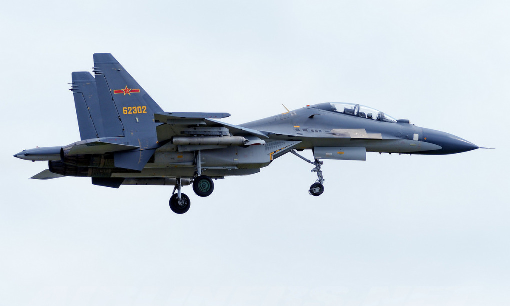
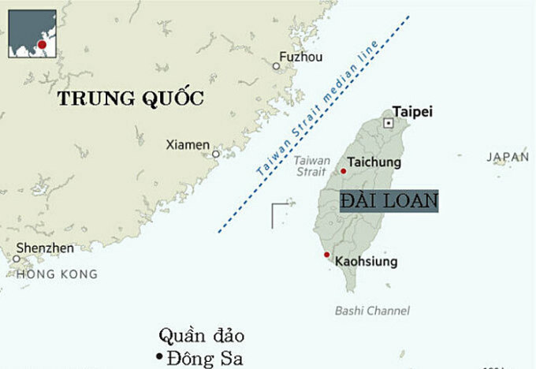

Chào mừng đến với lập trình web
Lớp K23HTTTB
Tiêm kích Su-30 Trung Quốc vượt giới tuyến Đài Loan
Quân đội Trung Quốc triển khai 4 tiêm kích vượt đường trung tuyến trên eo biển Đài Loan, khiến Đài Bắc điều động lực lượng theo dõi.
"5 tàu hải quân và 15 máy bay quân sự Trung Quốc được phát hiện ở các khu vực quanh đảo Đài Loan hôm 22/8. Lực lượng phòng vệ liên tục giám sát tình hình và phản ứng bằng cách triển khai chiến đấu cơ, tàu chiến và các hệ thống tên lửa mặt đất", cơ quan phòng vệ Đài Loan ra thông cáo cho biết.

Dữ liệu do lực lượng phòng vệ Đài Loan công bố cho thấy biên đội gồm hai tiêm kích Su-30 và hai chiến đấu cơ hạng nhẹ J-10 Trung Quốc vượt qua đường trung tuyến, ranh giới được ngầm hiểu là đường phân định eo biển Đài Loan.
Hai tiêm kích hạng nặng J-11, hai tiêm kích bom JH-7, một máy bay do thám, một phi cơ săn ngầm và một chiến đấu cơ J-16 hoạt động ở khu vực tây nam vùng nhận diện phòng không (ADIZ) Đài Loan.

Đường trung tuyến (màu xanh) dọc eo biển Đài Loan. Đồ họa: FT.
Trung Quốc luôn coi Đài Loan là một tỉnh chờ thống nhất và tuyên bố sẵn sàng sử dụng vũ lực nếu cần. Mỹ cam kết tôn trọng nguyên tắc "Một Trung Quốc", nhưng tiếp tục duy trì quan hệ với Đài Loan và cung cấp cho hòn đảo các loại khí tài hiện đại.
Bắc Kinh tiến hành các hoạt động diễn tập bắn đạn thật với quy mô chưa từng có xung quanh đảo Đài Loan ngày 4-7/8, nhằm đáp trả chuyến thăm hòn đảo của Chủ tịch Hạ viện Nancy Pelosi. Quân đội Trung Quốc hôm 15/8 tiếp tục tập trận sẵn sàng chiến đấu ở vùng biển và vùng trời quanh Đài Loan, một ngày sau khi phái đoàn Mỹ do thượng nghị sĩ đảng Dân chủ Ed Markey dẫn đầu đến thăm hòn đảo.